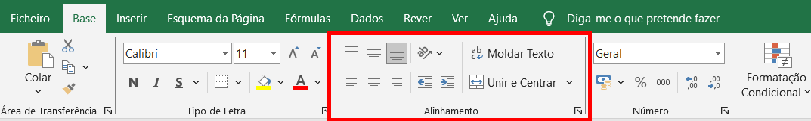
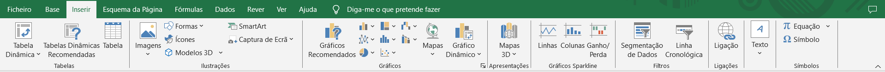
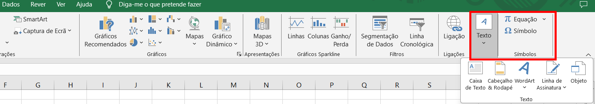

Abrir o Excel através do menu iniciar

Esta é a página inicial do Excel

Criar um Livro: 
Aqui podemos escolher entre varias opções; entre elas criar uma folha em branco ou fazer um tour pela aplicação.
Salvar um Livro:

Ao clicar em Browse (Explorar) podemos selecionar um local expecifico, como uma pasta, onde queremos guardar o nosso livro.
Abrir um Livro:

Ao clicar em Browse (Explorar) podemos selecionar um local expecifico, como uma pasta, onde está guardada o nosso livro.
Por fim temos uma Folha de Calculo em branco do Excel

Esta é a folha em branco

Este contorno indica a célula que esta ativa e vai ser editada.
Em cima e á esquerda encontramos as coordenadas de cada célula.
Nesta caixa é onde irá ser escrito o texto da célula selecionada ou uma formula para realizar uma operação ou estabelecer uma regra.
Neste canto encontramos as folhas criadas no livro. Podemos alterar o nome delas ou criar mais ao clicar no sinal "+".
Este é menu Base


Semelhante ao Word, aqui podemos encontrar as funções de mudar o tipo de letra e o tamanho.
Também é possível colocar o texto em Negrito (N), Itálico (I) e Sublinhado
Além disso podemos definir as bordas de uma tabela

Aqui temos as funções de Alinhar à esquerda, Centralizar, Alinhar à direita e Justificar.
Assim como alinhar em cima, em baixo e ao centro o texto de uma célula.
Também temos a função de unir células.
Esta função permite expecificar o tipo de dado numérico trabalhado.
Este é o menu Inserir


Aqui, semelhante ao word, podemos inserir imagens do dispositivo ou online.
Assim como adicionar formas, icons e gráficos.
Nesta parte podemos adicionar graficos á tabela para deixar mais dinamica e facil a visualização de dados.

Aqui podemos adicionar caixas de texto, cabeçalho, rodapé, wordart, etc.
Assim como equações e simbolos.